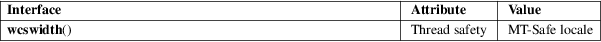

wcswidth − determine columns needed for a fixed-size wide-character string
Standard C library (libc, −lc)
#define
_XOPEN_SOURCE /* See feature_test_macros(7) */
#include <wchar.h>
int wcswidth(const wchar_t *s, size_t n);
The wcswidth() function returns the number of columns needed to represent the wide-character string pointed to by s, but at most n wide characters. If a nonprintable wide character occurs among these characters, −1 is returned.
The wcswidth() function returns the number of column positions for the wide-character string s, truncated to at most length n.
For an explanation of the terms used in this section, see attributes(7).

POSIX.1-2008.
POSIX.1-2001.
The behavior of wcswidth() depends on the LC_CTYPE category of the current locale.
iswprint(3), wcwidth(3)